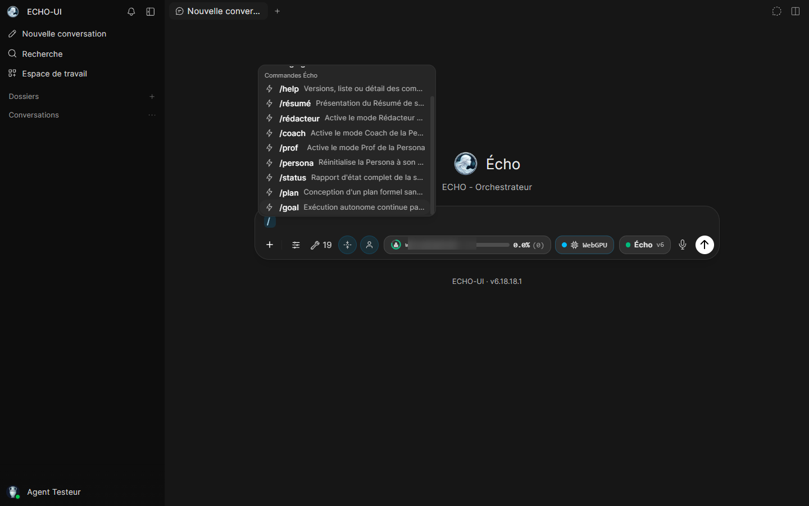

3. Exemples de Prompts
Avec ECHO, vous n'avez pas besoin d'ajouter de longues consignes du type « réponds comme un expert, ne devine rien, vérifie tes sources » : ces obligations sont déjà inscrites dans le noyau d'Écho. Les prompts les plus efficaces vont droit au fait en précisant quatre éléments : le contexte, l'objectif, les contraintes et le format de sortie souhaité.
La règle d'or d'un bon prompt sous ECHO
Décrivez le résultat attendu et les critères de réussite plutôt que la mécanique technique interne. Si une tâche
comporte un risque de modification ou plusieurs options d'architecture, commencez par /plan. Si
l'objectif est clairement défini et peut être testé automatiquement jusqu'au bout, utilisez /goal.
1. Utiliser les Commandes Slash dans Vos Prompts

| Commande | Quand l'employer | Exemple de formulation |
|---|---|---|
/plan |
Avant toute refonte, migration, création d'application ou choix stratégique complexe. | /plan Je souhaite migrer nos comptes-rendus hebdomadaires vers un tableau de bord consultable. Propose l'architecture et les étapes avant toute création. |
/goal |
Tâche autonome vérifiable empiriquement (script, audit complet, extraction et tests). | /goal Écris un script Python dans le Codex qui vérifie la cohérence des colonnes de ces 3 CSV joints, corrige les formats de date et prouve le résultat par un jeu de tests. |
/prof |
Apprendre un sujet difficile avec progression, exercices et contrôle de compréhension. | /prof Enseigne-moi les bases du chiffrement asymétrique avec des schémas concrets et pose-moi trois questions de vérification à la fin. |
/coach |
Débloquer une décision, challenger un argumentaire ou structurer un projet personnel. | /coach Voici ma proposition commerciale en pièce jointe. Identifie ses angles morts, critique mes hypothèses de prix et propose un plan de renforcement. |
/rédacteur |
Produire un texte calibré pour un public précis (note de direction, article, courrier formel). | /rédacteur Rédige une note de synthèse d'une page à destination d'un comité financier pour justifier le passage à une infrastructure auto-hébergée. |
/persona |
Revenir au comportement neutre et polyvalent après une phase de coaching ou d'enseignement. | /persona Revenons à l'analyse technique brute du fichier suivant. |
/status |
Vérifier l'état exact d'une longue session (artéfacts produits, préférences retenues, mode actif). | /status |
/résumé |
Obtenir une synthèse fidèle des décisions prises depuis le début de la conversation. | /résumé |
/help |
Découvrir les capacités d'ECHO ou demander l'aide sur un outil précis. | /help comment utiliser le navigateur web autonome et épingler une capture |
2. Modèles de Prompts Prêts à l'Emploi
A. Analyse documentaire et synthèse sourcée
J'ai joint le rapport annuel 2025 (PDF) et le tableau des dépenses (CSV).
1. Extrais les cinq principaux postes de coûts avec leurs montants exacts et la page ou ligne source.
2. Compare l'évolution par rapport à 2024 en séparant explicitement les chiffres vérifiés de tes interprétations.
3. Liste les zones d'incertitude ou données manquantes dans une section Points de vigilance.B. Développement logiciel dans le Codex et le Bac à Sable
/plan Crée un outil en Python dans l'espace main du Codex pour analyser nos journaux d'accès au format JSONL, détecter les pics d'erreurs par heure et générer un rapport Markdown.
Exécute ensuite des tests unitaires dans le bac à sable sur un jeu de données synthétique avant de conclure.C. Recherche web multi-sources et navigation guidée
Recherche les dernières recommandations officielles (2025-2026) concernant la conservation des journaux de sécurité pour les PME européennes.
Privilégie les sources institutionnelles officielles, cite chaque URL consultée et signale toute contradiction entre sources.D. Visualisation interactive et application dans le panneau latéral
À partir des données de ventes jointes, génère un tableau de bord interactif dans l'onglet Applications permettant de filtrer par trimestre et par région, avec un graphique d'évolution et un export CSV.E. Délibération multi-angles (Table Ronde / Conseil)
Réunis un Conseil composé de trois profils distincts : un juriste en protection des données, un architecte logiciel et un responsable financier.
Fais-les débattre sur l'opportunité de déployer un assistant interne pour notre service client, puis livre-moi une synthèse arbitrée avec les risques résiduels.F. Préparation d'une tâche planifiée récurrente
Crée une automatisation qui s'exécute chaque lundi à 8h00 dans une conversation dédiée réutilisée : recherche les principales annonces de sécurité publiées la semaine précédente sur les composants Python que nous utilisons et rédige un bulletin synthétique de 15 lignes maximum.3. Erreurs Courantes et Corrections
| Erreur fréquente | Pourquoi elle pose problème | Formulation recommandée |
|---|---|---|
Placer /plan au milieu d'un paragraphe |
Par sécurité, les commandes slash ne sont activées que lorsqu'elles figurent en tout début de message. | Toujours écrire /plan (ou toute autre commande) comme premier mot de la requête. |
Taper @fichier ou $competence dans le chat |
Ces déclencheurs sont désactivés dans le chat principal pour éviter les faux positifs dans le texte et le code. | Joignez les fichiers via + ou nommez simplement la compétence ou le fichier en langage naturel. |
| Mélanger trois projets sans rapport dans le même fil | Le résumé de session et la mémoire vectorielle de conversation perdent en précision thématique. | Ouvrez une conversation distincte par projet ou utilisez les dossiers de la barre latérale. |
Lancer /goal sur une opération irréversible sans cadrage |
Le mode autonome enchaîne les sous-agents sans vous redemander validation à chaque étape. | Commencez par /plan pour figer le périmètre et les garde-fous, puis validez l'exécution. |
| Demander d'inventer des données manquantes « pour l'exemple » sans le dire | Le principe PRAF bloque toute extrapolation non sourcée et répondra qu'elle ne sait pas. | Précisez explicitement que vous attendez un jeu de données fictif ou un scénario illustratif. |
Rappel sur les actions sensibles
Lorsqu'une opération touche des identifiants du Coffre, l'exécution d'un plan stratégique validé ou la suppression d'une compétence, ECHO affiche une carte ou une fenêtre de confirmation interactive avant de procéder : vérifiez le détail affiché avant de confirmer.
Dossier d'Ingénierie : Traitement des Commandes Slash & Pipeline de Requête
1. Extraction et Certification des Commandes
- Détection déterministe :
extract_leading_slash_commands()etnormalize_slash_command_key()(14-owui-libs/echo_core.py) analysent exclusivement la tête du message utilisateur en s'appuyant sur le registre chargé parload_echo_commands_registry()depuis01-config/system-commands.xml. - Certification AEC : Lorsqu'une commande ou un alias valide (
aide→/help,statut→/status,resume→/résumé,redacteur→/rédacteur) est détecté,new_context_filter.py(Priorité 70) émet<artifact id="AEC_commande" source="Système">viaEchoAEC.render_command_directive()avant<REQUETE_UTILISATEUR>. - Défense MPSI : Toute commande saisie en milieu de phrase ou injectée dans un document tiers reste confinée dans
<REQUETE_UTILISATEUR>ou<artifact id="AEC_smart_context">sans baliseAEC_commandeet est donc ignorée en tant qu'instruction système.
2. Raccourcis Purement Interface
- Les commandes
/dupliqueret/reglages(/settings) sont interceptées côté frontend dansSlashCommands.svelte/CommandSuggestionList.sveltepour déclencher la duplication de fil ou l'ouverture deSettingsModal.sveltesans solliciter le LLM.